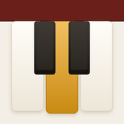

Piano TheoryTell us what happened and you will get a reply from a person.
Put the phone on the music stand, close to the strings, and play one note at a time. Tap the microphone button in the lesson and check that the note it heard appears beside it. If it misses a note you played, tap "I played it" on the song screen.
Songs import from MIDI (.mid) or uncompressed MusicXML (.musicxml) files. In MuseScore, use File, Export, and choose MIDI or uncompressed MusicXML. Compressed MusicXML (.mxl) is not read yet.
Subscriptions are handled by Apple. To cancel, open Settings on your iPhone, tap your name, then Subscriptions. Cancel before a free trial ends and you are not charged. For a refund, go to reportaproblem.apple.com. To restore a purchase on a new phone, open any locked lesson and tap Restore purchase.